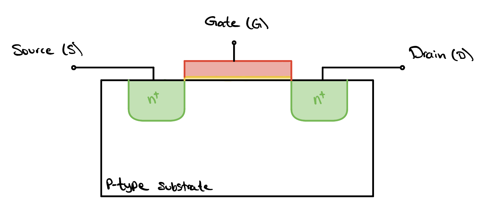
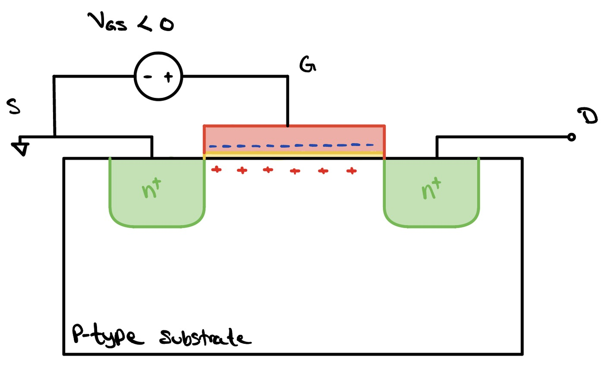
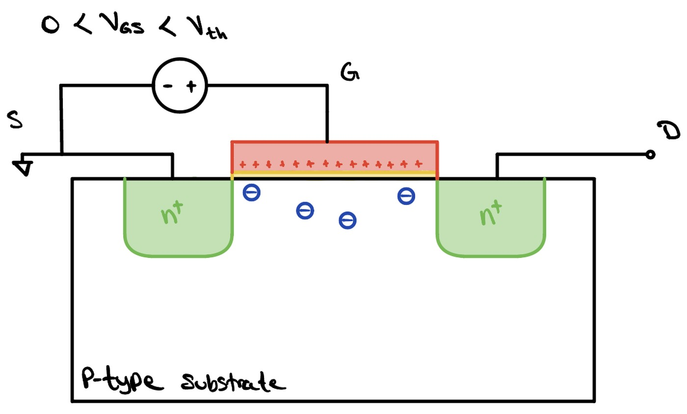
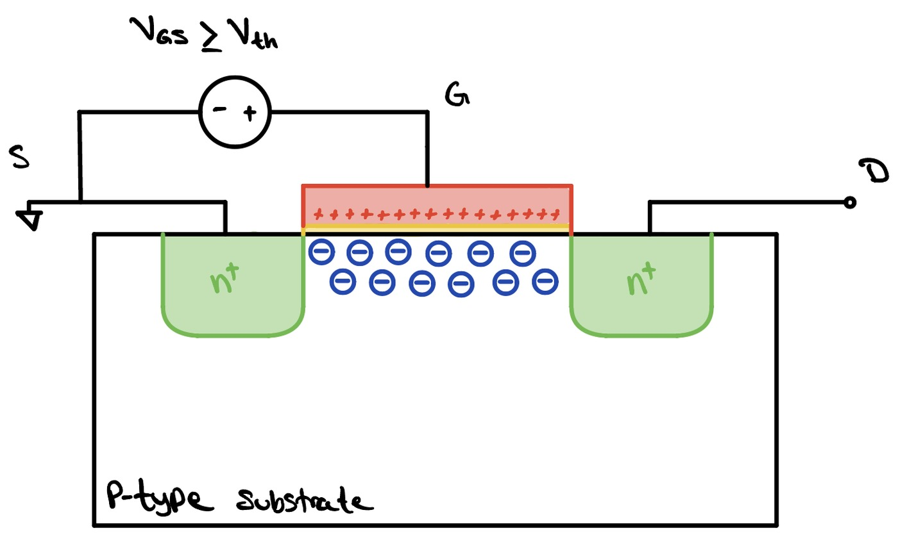
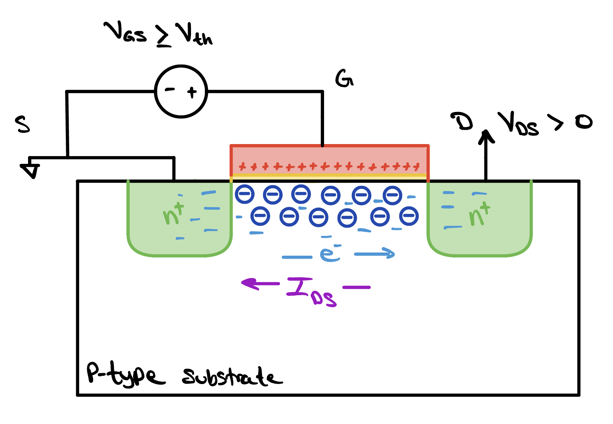
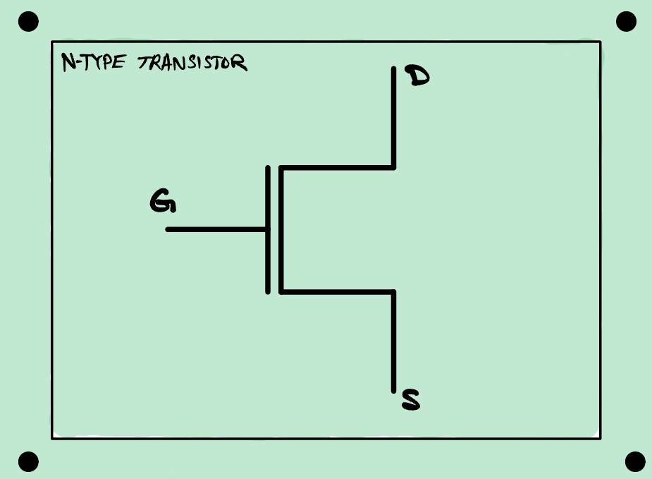
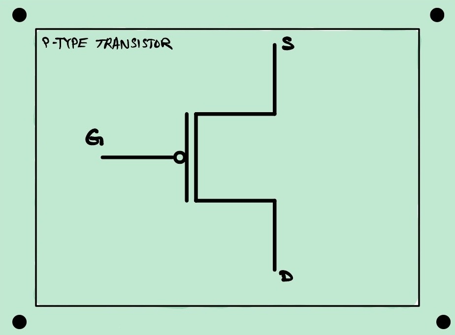
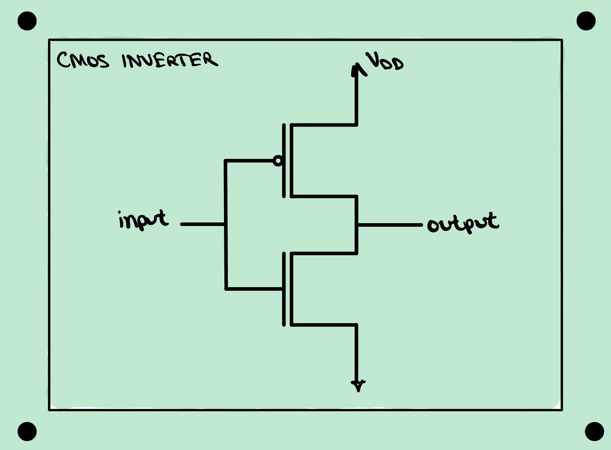

Transistor Basics
Transistors are the building blocks of every modern computer, and yet each one is nothing more than a switch. In this lesson we will look at how that switch actually works, and how just a handful of them, wired together, build the very logic gates we met earlier.

The Anatomy of a Transistor

Gate Oxide
The third part is the gate oxide, a dielectric sandwiched between the gate and the channel. Its job is to stop the gate injecting current into the silicon it controls, while staying thin enough that the gate's field still reaches through.
It is usually silicon dioxide, SiO2, which is what silicon becomes when heated in oxygen and so can be grown straight out of the wafer.
Substrate
The first part of the transistor, and by far the largest, is the substrate. Sometimes called the bulk, it is a moderately piece of silicon that acts as the foundation the whole device is built on. In short, the bulk is the body of the transistor, the block that everything else is formed into and the steady voltage that everything else is measured against.
Silicon is a Group IV atom, meaning it carries four outer electrons and naturally settles into a lattice where every atom shares one electron with each of its four neighbors, a crystal structure known as diamond cubic. Pure silicon by itself is a poor conductor, because every one of those electrons is locked into a bond and almost none are free to move, so if silicon is going to be any use in our devices, we have to find a way of adding free charge carriers to it. Doping is that way.

In the image above, we can see intrinsic silicon at the far left, precisely the pure silicon we just discussed. To its right is a form of n-type silicon. In this lattice, the Group V atom phosphorus takes the place of one of the silicon atoms in the lattice. Because phosphorus naturally has five valence electrons, it can embed itself into the silicon lattice with an extra electron to spare, therefore adding a free electron, e−, to the lattice.
In the far right image, we see another doped piece of silicon, this time with the Group III atom boron, giving us p-type silicon. Since boron has only three valence electrons, when it embeds itself into the silicon lattice, it creates a vacancy, known as a hole and written h+. The boron atom can borrow an electron from a neighboring atom, thereby transferring the vacancy across the lattice.
Channel
The second part is the channel, drawn in green and standing on top of the substrate. Its purpose is to provide the road that charge travels along as it crosses from one end of the transistor to the other. At either end of that road we place a region of silicon doped far more heavily than the bulk underneath, and we give those two regions the names source and drain. The channel, then, is simply the stretch of silicon lying between them, and everything the transistor does comes down to whether that stretch is willing to carry current or not.
Here is a point that surprises most people when they first meet it. The source and the drain are manufactured identically, so if we were handed a transistor on its own, we would have no way of saying which region is which. Their identities are not built into the silicon at all, but they are decided by the voltages we choose to apply once the device is in a circuit. The rule to remember is that charge carriers enter at the source and leave at the drain. In an n-type device the carriers are electrons, which drift from low voltage toward high, so the terminal we hold at the lower voltage becomes the source and the higher one becomes the drain. In a p-type device the carriers are holes, which travel the other way, so that ordering is reversed.
Gate
The fourth part is the gate, the piece of the transistor that controls the flow of carriers through the channel. Depending on the voltage applied to the gate, the channel beneath it either fills with carriers and conducts or empties out and blocks. The gate never touches the silicon and never delivers those carriers itself, since the oxide stands in the way. It works entirely at a distance, through the electric field its voltage projects downward.
The gate is usually made of polysilicon, which is silicon deposited as a mass of small crystals rather than one continuous lattice, and doped so heavily that it conducts much like a metal. Metal would seem the obvious choice, and the earliest devices did use it, but polysilicon has a decisive advantage in manufacturing. It survives the high temperatures of the steps that follow, which means the gate can be laid down first and then used as a mask while the source and drain are doped on either side of it. The gate therefore aligns itself perfectly with the channel it controls, and no amount of care aligning a separate mask could match that.
Applying Voltages

With all four parts in hand, we can turn to what the transistor actually does once we begin applying voltages to its terminals. This is where a transistor stops being a stack of materials and starts being a switch, because, depending on what we apply to its terminals, the very same piece of silicon behaves in completely different ways. It helps here to look at the transistor a second way, through a cross section of the same device, which shows all four components again from the side. For this conversation, we will consider a transistor whose diffusions are n-type, marked n+ to show how heavily they are doped, sitting in a p-type substrate. A transistor built this way around is called an nMOS.



Taking the substrate beneath the oxide to be p-type, so the carriers already sitting in it are holes, we start by applying a negative voltage to the gate. Doing so drives the negative charge in the gate down onto its lower face, so it piles up along the interface between the gate and the oxide. With all of that negative charge sitting there, the positive charges, the holes in the channel just beneath the oxide, are pulled up toward it and gather in a thin layer against the underside of the oxide. The silicon at the surface is now even richer in holes than the bulk below it, and because we have gathered extra carriers at the surface rather than removed any, this mode is called accumulation.
If we instead apply a positive voltage to the gate and slowly increase it, we see the opposite arrangement. Positive charge now collects at the gate side of the interface, and in a similar light as before, it acts on the carriers below. This time it repels the holes in the channel, pushing them down and away from the surface and leaving behind a region emptied of them. What remains there is not nothing. It is the ionized impurities, the dopant atoms themselves, which are locked into the silicon lattice and cannot move. This mode is called depletion, and the name is exactly what you would guess, since we have depleted the surface of holes and left only fixed charge behind.
If we keep cranking the gate voltage up, the surface eventually runs out of holes to push away, and the field begins pulling electrons toward the interface instead. Past a certain gate voltage, which we call the threshold voltage, written Vth, enough of them have gathered that the surface is no longer behaving as p-type silicon at all. It has flipped into a thin sheet of what is effectively n-type material, stretching from the source to the drain. This mode is called inversion, because the surface has inverted from one type to the other, and it is the mode that finally lays a conducting path between the source and the drain.

Before we can call the transistor on, however, one thing is still missing. Inversion has given us a channel full of free electrons, but a channel full of carriers is not the same as a current. Those electrons will sit where they are unless something pushes them along the channel, and the gate cannot do it, because the field the gate projects points straight down into the silicon rather than from one end of the channel to the other. What we need is a lateral field, one that runs the length of the channel, and we get it by putting a positive voltage on the drain terminal. The drain now pulls on the electrons in the channel, they drift from the source toward the drain, and at last we have movement.
Here we have to be careful, because current and carriers do not point the same way. Conventional current is defined as the flow of positive charge, so electrons, being negative, travel in the opposite direction to the current they constitute. Our electrons run from source to drain, which means the current runs from drain to source. This is the current the transistor is built to deliver, and we denote it IDS.
Everything we have just built up describes an nMOS device, and its counterpart, the pMOS, is best understood as the same story with every sign turned around. A pMOS has p-type diffusions in an n-type body, so its carriers are holes rather than electrons, and its threshold voltage is negative. We write the two as Vthn and Vthp to keep them apart. Where an nMOS turns on once VGS rises above Vthn, a pMOS turns on once VGS falls below Vthp, which means pulling the gate down rather than up. The drain sits below the source instead of above it, so VDS is negative, and the holes carrying the charge move from source to drain, which makes IDS negative as well. The practical consequence is the one worth remembering: an nMOS is an active high switch, turning on when its gate is driven high, while a pMOS is an active low switch, turning on when its gate is driven low.
Putting Transistors in a Circuit
We now know enough about the device to begin using it, and once we are building circuits out of transistors rather than studying one on its own, the cross section stops being a useful drawing. Nobody sketches doped wells and oxide layers when they are wiring up a circuit. So we meet the transistor a third time, in its schematic form, which throws away everything about how the device is made and keeps only what we need in order to connect it. The terminals are the same ones we have been studying all along. The line coming in from the left is the gate, and the two leads on the right are the source and the drain. The only difference between the two symbols is the small circle on the gate of the p-type device, which is our shorthand for a transistor that turns on when its gate is pulled low rather than high. Notice too that the source and drain have traded places between the two drawings, which is exactly the point we made earlier: those names follow the voltages, not the silicon.


With both symbols in hand we can wire our first circuit, and it turns out that one of each is all we need to build the simplest logic gate we met earlier, the inverter. Pairing an n-type device with a p-type device this way, so that one of them conducts whenever the other does not, is what makes the circuit a inverter.

Read the schematic from the outside in. The p-type device sits on top with its source tied to the supply voltage, written VDD, and the n-type device sits underneath it with its source tied to ground. Their gates are joined together on the left and become the single input, and their drains are joined together on the right and become the output. Every transistor in the circuit therefore sees the same input voltage at its gate, which is what makes the pair behave as one device.
Now recall what each device does with that shared input. Drive the input high and the n-type transistor, which turns on for a high gate voltage, opens a path from the output down to ground, while the p-type transistor, marked with its circle to remind us that it wants a low gate, shuts off. The output is pulled to ground, a logic zero. Drive the input low and the two swap roles exactly. The p-type device opens a path from the supply to the output and the n-type device shuts, so the output is pulled up to VDD, a logic one. A high in gives a low out and a low in gives a high out, which is precisely the behavior of the inverter we met when we were working in logic gates alone.
CMOS stands for complementary metal-oxide-semiconductor, and the word doing the work is complementary. The n-type and p-type devices are built to be opposites of each other, so in any settled state one of them is conducting and the other is not.